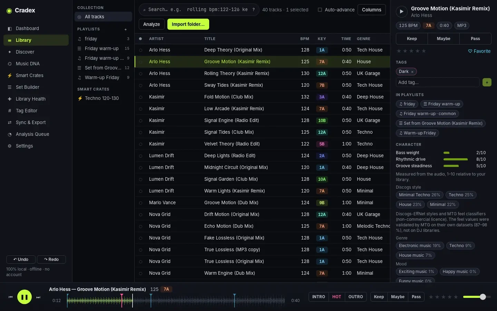
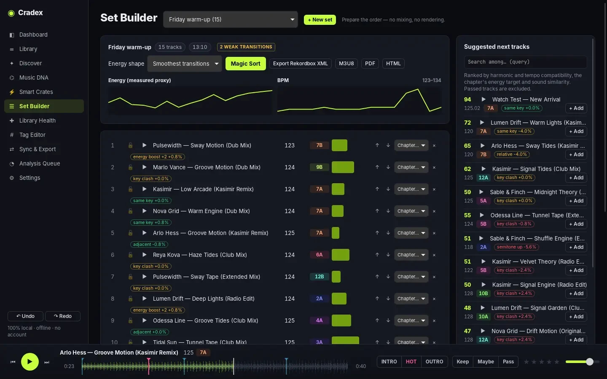

Install
Download the file for your system from the download section. The installers are not code-signed yet, so the operating system asks for confirmation the first time. To check a download, compare its SHA-256 with SHA256SUMS.txt in the release (shasum -a 256 file on macOS, sha256sum file on Linux, Get-FileHash file in PowerShell).
macOS
- Open the
.dmg(aarch64for Apple silicon M1–M4,x64for Intel) and drag Deep Cuts into Applications. - The first time, right-click the app › Open › Open. After that it opens normally.
- If macOS still refuses, run in Terminal:
xattr -dr com.apple.quarantine "/Applications/Deep Cuts.app"
The Intel build has every feature except the local audio models, because ONNX Runtime does not provide Intel Mac binaries.
Windows
- Run
Deep.Cuts_…_x64-setup.exe(or the.msi). - On “Windows protected your PC”, click More info › Run anyway.
Linux
Debian, Ubuntu and derivatives:
sudo apt install ./Deep.Cuts_*_amd64.debAny recent 64-bit distribution, with the AppImage:
chmod +x Deep.Cuts_*_amd64.AppImage
./Deep.Cuts_*_amd64.AppImageThe audio models need glibc 2.38 or newer (Ubuntu 24.04, Debian 13, Fedora 40 or later). Audio preview uses GStreamer; the .deb installs its plugins.
First steps
- Import. In Library, click Import folder… or drop folders anywhere on the window. Subfolders are included. MP3, WAV, AIFF, FLAC, ALAC/AAC (M4A) and OGG are read; files are never modified.
- Choose how genres are suggested. Before the first analysis Deep Cuts asks once: the optional Discogs styles model, only your own labels, or both. You can change it later in Settings.
- Let it analyse. New tracks are analysed in the background (Settings › Analyze new tracks automatically). Follow progress in Analysis Queue. Closing the app is safe: the queue resumes.
- Start triaging. Select a track, press Enter to preview from its hot region, then K keep, M maybe or P pass.
- Bring your history. Coming from Rekordbox, Traktor, Serato or VirtualDJ? Use Sync & Export › Import to bring in playlists, ratings, cues and comments.
Analysis profile (Settings): Light uses one worker, Balanced half the CPU cores, Maximum all cores but one.
The interface

| Page | What it is for |
|---|---|
| Dashboard | Statistics computed from your library: BPM, keys, loudness, genres, formats, decisions. |
| Library | All tracks, playlists and Smart Crates; preview, decide, tag, edit, analyse. The details panel shows the source of every value. |
| Discover | Similar tracks, search by description, and a map of your library. |
| Music DNA | Relative energy 1–10, the local audio model, genre and tag suggestions learned from your labels, automatic groups. |
| Smart Crates | Saved searches that update themselves; exported as rules or playlists. |
| Set Builder | Order a set, see transitions, chapters, next-track suggestions, export. |
| Library Health | Missing files, duplicates, suspected transcodes, broken playlists, unused files. |
| Tag Editor | Your tag vocabulary: hierarchy, synonyms, categories and Quick Tag slots. |
| Sync & Export | Import from and export to DJ software, M3U8, CSV, HTML and PDF; Rekordbox My Tags. |
| Analysis Queue | Progress, errors and the analysis profile. |
| Settings | Language, analysis, AI models, BPM range, key notation, watch folders, backups. |
Triage & keyboard shortcuts
On macOS use ⌘ where the table says Ctrl. Shortcuts are ignored while you type in a field.
Library
| Keys | Action |
|---|---|
| ↑ ↓ (with Shift to extend) | Move through the list and select |
| Enter · Shift+Enter | Preview from the hot region · from the start |
| K M P U | Keep, Maybe, Pass, clear decision |
| 1–5 · 0 | Rating · clear rating |
| Shift+1–9 | Toggle a Quick Tag (set the slots in Tag Editor) |
| A | Analyse the selected tracks |
| Alt+↑/↓ | Move a track inside a playlist or set |
| Ctrl+F · Ctrl+A | Search · select all |
| Ctrl+Z · Ctrl+Shift+Z or Ctrl+Y | Undo · redo (decisions, edits, tags, fixes) |
Player
| Keys | Action |
|---|---|
| Space | Play / pause |
| ← → (with Shift: 30 s) | Seek 10 s |
| H · I · O | Hot region · intro · outro |
| N · B | Next · previous track |
| C | Add a cue point at the playhead |
Turn on Auto-advance above the table to jump to the next track after each decision.
Search language
The same language works in the search bar, in Smart Crates, in Discover and in the CLI.
rolling bpm:122-126 key:8A+ genre:"tech house" -decision:pass (label:a OR label:b)| Write | Finds |
|---|---|
words · "a phrase" | Full text over title, artist, version, remixer, album, label, genre, comment, notes and path |
artist:foo title:"exact" | One field: artist, title, album, label, genre, subgenre, version, remixer, comment, notes, path, format |
bpm:124 bpm:122-126 bpm:>120 | Numbers, ranges and comparisons; also year, rating, duration, lufs, energy |
key:8A key:Am key:8A+ key:8A++ | A key; + harmonically compatible on the Camelot wheel; ++ also energy moves +2 / +7 |
decision:keep|pass|maybe|none | Triage state |
tag:name fav:yes added:7d | Tags, favourites, recently added |
missing:yes analyzed:no artwork:no transcode:yes | Housekeeping |
genre:none | Empty value (works for any field) |
AND (implicit), OR, NOT / -term, ( … ) | Combine conditions |
Smart Crates save a query and update themselves. Recipes (Library) add actions to a query, such as setting a tag, and can run automatically on newly imported tracks; each run is one undoable step.
Analysis
Analysis runs on your CPU and never changes your files. For each track Deep Cuts measures:
- Tempo and beat phase (for the beatgrid), refined to the exact BPM.
- Key, shown in Camelot, Open Key or musical notation (Settings › Key notation).
- Loudness (EBU R128 LUFS), peak, crest and dynamics.
- Character: brightness, low end, onset density, bass weight, rhythmic drive, groove steadiness.
- Energy 1–10, a rank within your own library (Music DNA).
- Waveform, hot region, intro and outro, phrase-aligned cue suggestions, acoustic fingerprint and audio bandwidth.
BPM range
Like Rekordbox and Traktor, Settings › BPM range moves the detected tempo by doubling or halving only, so drum & bass stays at 174 instead of 87 when you choose 88–175. Re-analyse to apply it to existing tracks; BPM values you edited yourself are never overwritten.
How accurate is it?
On a held-out set of Beatport-labelled tracks the tempo is within 4 % for 92.5 % of tracks and within 0.05 BPM for 86.9 %; the key reaches a MIREX score of 67.5 % on GiantSteps Key. Methods and per-genre results: AI_VALIDATION.md. Always trust your ears over any number.
AI & optional models
All models run on your computer. On Windows they use DirectML and on Apple silicon Core ML when a GPU is available, otherwise the CPU. Nothing is uploaded.
| Model | Gives you | How to get it |
|---|---|---|
| PANNs CC BY 4.0, included | Broad genre, mood, vocals and instruments; the “sound” used by similar tracks | Included. Settings › Run the local audio AI model. |
| Discogs styles MTG, CC BY-NC-SA, 26 MB + classifiers | 400 Discogs styles, danceability, moods, voice/instrumental, arousal and valence | Asked before the first analysis, or Settings › Genre suggestions › Change… |
| Accurate styles (MAEST) MTG, CC BY-NC-SA, 332 MB | The same 400 styles, far more accurate on electronic sub-genres; several seconds per track | Same dialog, tick “Accurate styles (MAEST)”. |
| LAION-CLAP Apache-2.0, about 400 MB | Search by description | Discover › Describe › Download, then Index. |
The MTG models are licensed for non-commercial use. Using them for paid work may count as commercial; the MTG offers other licences on request.
Suggestions you stay in control of
Music DNA suggests genres and tags from the tracks you have already labelled, and shows how often those suggestions are right on your own library. Nothing is applied until you review it, rejected suggestions are not offered again, and applying is undoable.
Search by description
Write in plain English, for example “warm piano house with female vocals”. Broad descriptions of instruments, voice, mood and energy work best; fine sub-genre names are often confused. The scope field below the search limits results with any query, e.g. -decision:pass bpm:120-128.
Discover & sets

Similar tracks
Right-click a track › Find similar, or play a track and open Discover. Sliders weigh tempo, harmony, energy, timbre, rhythm, dynamics and sound; each match explains its tempo change and key relation. Use as seed keeps exploring from a result; Create playlist saves the best matches.
Set Builder
- Pick a playlist or create a set; choose an energy shape and press Magic Sort. Lock tracks to keep their place.
- Weak transitions are flagged; each row shows the key relation and BPM change to the next track.
- Split the set into chapters; the side panel suggests next tracks for the current chapter.
- Export the set as Rekordbox XML, M3U8, PDF or HTML.
To your DJ software
Open Sync & Export. “What to export” chooses the whole library with all playlists and folders, or a selection as one playlist. Imports take a backup of the Deep Cuts library first. The DJ software's own database is never modified.
Rekordbox
- Click Export Rekordbox XML and save the file.
- In Rekordbox: Preferences › Advanced › Database › rekordbox xml › choose the file.
- In the Rekordbox sidebar open rekordbox xml, right-click playlists › Import.
To bring Rekordbox data in: Rekordbox › File › Export Collection in xml format, then Import Rekordbox XML… in Deep Cuts (tracks, BPM, key, ratings, comments, beatgrid, cues, loops, playlists).
Rekordbox My Tags
If Rekordbox writes My Tags into comments (/* Tag / Tag */), Deep Cuts reads them on import as tags under “My Tag”. Rekordbox cannot import My Tag values back, so Deep Cuts exports one playlist (or M3U8) per My Tag: import it in Rekordbox, select all its tracks and set the My Tag.
Traktor
Export an NML collection (tracks, playlists, folders, BPM, key, rating, comments, grid, cues and loops). In Traktor: File › Import Another Collection. Traktor's collection.nml is never touched.
Serato
Choose the _Serato_ folder on the drive that holds the music; crates and folders are written there. Serato reads BPM and key from the files' tags, so use Write tags to files for those tracks first.
VirtualDJ
Export playlists as .vdjfolder files into a folder you choose, for example VirtualDJ/Playlists. Import reads database.xml and playlists (metadata, BPM, key, grid, hot cues).
Each format is round-trip tested (export, import, compare). Checks inside each DJ application and version are in progress; tell us on GitHub if a field does not arrive as expected.
Other formats
M3U8 and CSV export, HTML and PDF track lists, CSV metadata import with column mapping, and Rebuild an external playlist: a Spotify CSV (e.g. from Exportify), an Apple Music text export, an M3U or an “Artist - Title” list matched to your own files, with a review step and the list of missing tracks.
Library health
- Missing files: moved files are relinked automatically when you re-import the folder that now holds them (matched by content).
- Duplicates: identical files, same artist and title, and the same recording by sound across formats. Merge keeps one copy, re-points playlists and moves the others to a trash folder.
- Suspected transcodes: lossless files whose spectrum stops far below what the format carries, usually made from an MP3. It is a measurement, not proof: listen and decide.
- Smart Fixes: promo text and URLs, track-number prefixes, SHOUTED CAPS, feat. separators, genre spelling, version and remixer extraction, all with a preview.
Safety, backups, privacy
- Your audio files are only read, unless you choose Write tags to files (dry run, optional copies of the originals; tags go to a verified copy that replaces the file only after a read-back check) or rename/move files.
- File moves (rename, move, merge) are journalled: if something fails or the computer stops halfway, files are put back where the library says they are at the next start. A merge either completes for every file or changes nothing.
- Before the library is upgraded to a new version, a copy of the old database is kept next to it (
lib.db.pre-vN.bak). - Every edit, decision, tag and fix can be undone; each track has a change history.
- The library database is backed up daily (last 10 kept), before imports from DJ software and before every restore. Settings › Backups.
- Nothing is deleted: duplicates go to a trash folder you review.
Where your library lives
| Windows | %APPDATA%\DeepCuts |
|---|---|
| macOS | ~/Library/Application Support/DeepCuts |
| Linux | ~/.local/share/DeepCuts |
Set the environment variable DEEPCUTS_HOME to use another folder.
Privacy
No account, no telemetry, no cloud. The network is used only when you start it: downloading an optional model, or the online auto-tagger, which sends artist, title, version and duration of the selected tracks to MusicBrainz, Deezer, iTunes or Discogs (with your token), as you choose.
Troubleshooting
macOS says the app is damaged or cannot be opened
It is the missing code signature. Right-click › Open › Open, or run xattr -dr com.apple.quarantine "/Applications/Deep Cuts.app".
No audio preview on Linux
Install the GStreamer plugins: sudo apt install gstreamer1.0-plugins-good gstreamer1.0-plugins-bad gstreamer1.0-libav.
The AI suggestions are missing
Check Settings › Run the local audio AI model, then re-analyse (Music DNA shows how many tracks lack model results). On Intel Macs the audio models are not available.
A model download fails
The MTG server is sometimes busy; Deep Cuts retries a few times. Try again later. Each file is checked against a fixed hash, so a broken download is never used.
BPM is half or double what I expect
Choose a BPM range in Settings that matches your genres and re-analyse, or edit the BPM: your own value is kept.
Something else
Open an issue on GitHub with your system, the Deep Cuts version (Settings › About) and the steps that lead to the problem.
Build from source & CLI
Requirements: Rust (stable) and Node.js 22; on Linux also libwebkit2gtk-4.1-dev librsvg2-dev.
git clone https://github.com/Nicodesy06/Deep-Cuts.git
cd Deep-Cuts
npm install
npm run dev # desktop app with hot reload
npm run build # installers in target/release/bundle
npm test # UI and Rust testsThe deepcuts command-line tool works on the same library: import, search, decide, analyze, tag, fix, write-tags, rename, import-dj, export-dj, match-playlist, undo, export, stats.
cargo run -p dc-cli --release -- --help
deepcuts search 'bpm:122-126 key:8A+ -decision:pass'